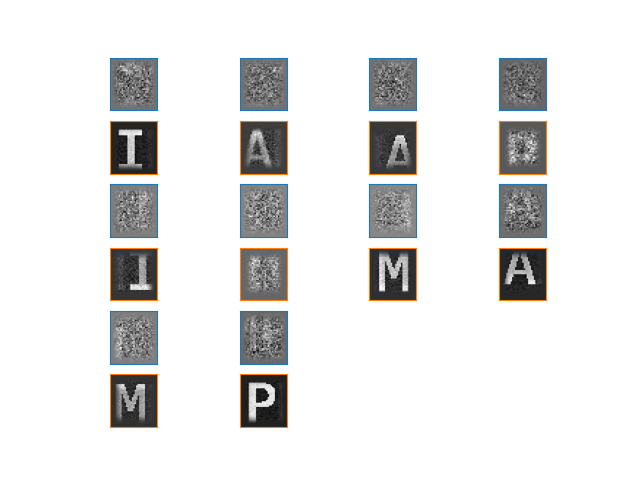

Note
Click here to download the full example code
DiCoDiLe on text images¶
This example illustrates pattern recovery on a noisy text image using DiCoDiLe algorithm.
import matplotlib.pyplot as plt
import numpy as np
from dicodile import dicodile
from dicodile.data.images import fetch_letters_pami
from dicodile.update_d.update_d import tukey_window
from dicodile.utils.csc import reconstruct
from dicodile.utils.dictionary import init_dictionary
from dicodile.utils.viz import display_dictionaries
We will first load PAMI image generated from a text of 5000 characters drawn uniformly from the 4 letters P A M I and 2 whitespaces and assign it to X.
We will also load the images of the four characters used to generate X and assign it to variable D.
X_original, D = fetch_letters_pami()
Out:
Downloading data from https://s3-eu-west-1.amazonaws.com/pfigshare-u-files/26750168/text_4_5000_PAMI.npz (17.8 MB)
file_sizes: 0%| | 0.00/18.6M [00:00<?, ?B/s]
file_sizes: 0%|1 | 73.7k/18.6M [00:00<00:33, 551kB/s]
file_sizes: 1%|3 | 205k/18.6M [00:00<00:22, 808kB/s]
file_sizes: 5%|#3 | 926k/18.6M [00:00<00:06, 2.90MB/s]
file_sizes: 20%|#####3 | 3.81M/18.6M [00:00<00:01, 10.2MB/s]
file_sizes: 60%|###############5 | 11.1M/18.6M [00:00<00:00, 25.4MB/s]
file_sizes: 94%|########################3 | 17.4M/18.6M [00:00<00:00, 32.3MB/s]
file_sizes: 100%|##########################| 18.6M/18.6M [00:00<00:00, 22.4MB/s]
Successfully downloaded file to /github/home/data/dicodile/images/text/text_4_5000_PAMI.npz
We will work on the copy X of the original image and we need to reshape image data X to fit to the expected signal shape of dicodile:
(n_channels, *sig_support)
Out:
(1, 2321, 2004)
Reshape D to fit to dictionary format:
(n_atoms, n_channels, *atom_support)
Out:
(4, 1, 37, 33)
Let’s display an extract of the original text image X_original and all the images of characters from D.
zoom_x = X_original[190:490, 250:750]
plt.axis('off')
plt.imshow(zoom_x, cmap='gray')
display_dictionaries(D)


Out:
<Figure size 640x480 with 4 Axes>
We add some Gaussian white noise with standard deviation std 3 times larger than X.std to X.
We will create a random dictionary of K = 10 patches from the noisy image.
# set number of patches
n_atoms = 10
# set individual atom (patch) size
atom_support = np.array(D.shape[-2:])
D_init = init_dictionary(X, n_atoms=n_atoms, atom_support=atom_support,
random_state=60)
# window the dictionary, this helps make sure that the border values are 0
atom_support = D_init.shape[-2:]
tw = tukey_window(atom_support)[None, None]
D_init *= tw
print(D_init.shape)
Out:
(10, 1, 37, 33)
Let’s display an extract of noisy X and random dictionary D_init generated from X.


Out:
<Figure size 640x480 with 12 Axes>
Set model parameters.
# regularization parameter
reg = .2
# maximum number of iterations
n_iter = 100
# when True, makes sure that the borders of the atoms are 0
window = True
# when True, requires all activations Z to be positive
z_positive = True
# number of workers to be used for computations
n_workers = 10
# number of jobs per row
w_world = 'auto'
# tolerance for minimal update size
tol = 1e-3
Fit the dictionary with dicodile.
Out:
[DEBUG:DICODILE] Lambda_max = 24.846518191532823
/github/workspace/dicodile/workers/reusable_workers.py:50: UserWarning: You should not require different size
warnings.warn("You should not require different size")
Started 10 workers in 5.46s
[INFO:DICODILE] - CD iterations 0 / 100 (0s)
[DEBUG:DICODILE] lambda = 4.969e+00
[INFO:DICOD-10] converged in 8.756s (7.589s) with 54536 iterations (8125 updates).
[DEBUG:DICODILE] Objective (z) : 3.325e+06 (13s)
[PROGRESS:Update D] 3s - 1.00% iterations (1.321e+00)
[PROGRESS:Update D] 7s - 2.00% iterations (2.178e-03)
[PROGRESS:Update D] 9s - 3.00% iterations (1.087e-03)
[PROGRESS:Update D] 9s - 4.00% iterations (1.087e-03)
[PROGRESS:Update D] 10s - 5.00% iterations (1.087e-03)
[PROGRESS:Update D] 11s - 6.00% iterations (1.087e-03)
[PROGRESS:Update D] 12s - 7.00% iterations (1.087e-03)
[PROGRESS:Update D] 13s - 8.00% iterations (1.087e-03)
[PROGRESS:Update D] 13s - 9.00% iterations (1.087e-03)
[PROGRESS:Update D] 14s - 10.00% iterations (1.087e-03)
[PROGRESS:Update D] 15s - 11.00% iterations (1.087e-03)
[PROGRESS:Update D] 16s - 12.00% iterations (1.087e-03)
[PROGRESS:Update D] 17s - 13.00% iterations (1.087e-03)
[PROGRESS:Update D] 17s - 14.00% iterations (1.087e-03)
[PROGRESS:Update D] 18s - 15.00% iterations (1.087e-03)
[PROGRESS:Update D] 19s - 16.00% iterations (1.087e-03)
[PROGRESS:Update D] 20s - 17.00% iterations (1.087e-03)
[PROGRESS:Update D] 21s - 18.00% iterations (1.087e-03)
[PROGRESS:Update D] 21s - 19.00% iterations (1.087e-03)
[PROGRESS:Update D] 22s - 20.00% iterations (1.087e-03)
[PROGRESS:Update D] 23s - 21.00% iterations (1.087e-03)
[PROGRESS:Update D] 24s - 22.00% iterations (1.087e-03)
[PROGRESS:Update D] 25s - 23.00% iterations (1.087e-03)
[PROGRESS:Update D] 25s - 24.00% iterations (1.087e-03)
[PROGRESS:Update D] 26s - 25.00% iterations (1.087e-03)
[PROGRESS:Update D] 27s - 26.00% iterations (1.087e-03)
[PROGRESS:Update D] 28s - 27.00% iterations (1.087e-03)
[PROGRESS:Update D] 29s - 28.00% iterations (1.087e-03)
[PROGRESS:Update D] 30s - 29.00% iterations (1.087e-03)
[PROGRESS:Update D] 30s - 30.00% iterations (1.087e-03)
[PROGRESS:Update D] 31s - 31.00% iterations (1.087e-03)
[PROGRESS:Update D] 32s - 32.00% iterations (1.087e-03)
[PROGRESS:Update D] 33s - 33.00% iterations (1.087e-03)
[INFO:Update D]: 34 iterations
[DEBUG:DICODILE] Objective (d) : 3.302e+06 (48s)
[INFO:DICODILE] - CD iterations 1 / 100 (70s)
[DEBUG:DICODILE] lambda = 4.969e+00
[INFO:DICOD-10] converged in 77.048s (65.017s) with 99990 iterations (90990 updates).
[DEBUG:DICODILE] Objective (z) : 3.239e+06 (86s)
[PROGRESS:Update D] 6s - 1.00% iterations (5.159e-03)
[PROGRESS:Update D] 8s - 2.00% iterations (2.580e-03)
[PROGRESS:Update D] 9s - 3.00% iterations (5.451e-04)
[PROGRESS:Update D] 10s - 4.00% iterations (2.726e-04)
[PROGRESS:Update D] 12s - 5.00% iterations (1.363e-04)
[PROGRESS:Update D] 12s - 6.00% iterations (1.363e-04)
[PROGRESS:Update D] 13s - 7.00% iterations (1.363e-04)
[PROGRESS:Update D] 14s - 8.00% iterations (1.363e-04)
[PROGRESS:Update D] 15s - 9.00% iterations (1.363e-04)
[PROGRESS:Update D] 16s - 10.00% iterations (1.363e-04)
[PROGRESS:Update D] 16s - 11.00% iterations (1.363e-04)
[PROGRESS:Update D] 17s - 12.00% iterations (1.363e-04)
[PROGRESS:Update D] 18s - 13.00% iterations (1.363e-04)
[PROGRESS:Update D] 19s - 14.00% iterations (1.363e-04)
[PROGRESS:Update D] 20s - 15.00% iterations (1.363e-04)
[PROGRESS:Update D] 21s - 16.00% iterations (6.813e-05)
[PROGRESS:Update D] 22s - 17.00% iterations (6.813e-05)
[PROGRESS:Update D] 22s - 18.00% iterations (6.813e-05)
[PROGRESS:Update D] 23s - 19.00% iterations (6.813e-05)
[PROGRESS:Update D] 24s - 20.00% iterations (6.813e-05)
[PROGRESS:Update D] 25s - 21.00% iterations (6.813e-05)
[PROGRESS:Update D] 26s - 22.00% iterations (3.407e-05)
[PROGRESS:Update D] 27s - 23.00% iterations (3.407e-05)
[PROGRESS:Update D] 29s - 24.00% iterations (3.600e-06)
[INFO:Update D]: 25 iterations
[DEBUG:DICODILE] Objective (d) : 3.235e+06 (43s)
[INFO:DICODILE] - CD iterations 2 / 100 (207s)
[DEBUG:DICODILE] lambda = 4.969e+00
[INFO:DICOD-10] converged in 76.708s (65.117s) with 99990 iterations (89487 updates).
[DEBUG:DICODILE] Objective (z) : 3.222e+06 (87s)
[PROGRESS:Update D] 5s - 1.00% iterations (4.127e-02)
[PROGRESS:Update D] 7s - 2.00% iterations (8.723e-03)
[PROGRESS:Update D] 8s - 3.00% iterations (1.843e-03)
[PROGRESS:Update D] 10s - 4.00% iterations (3.895e-04)
[PROGRESS:Update D] 11s - 5.00% iterations (8.231e-05)
[PROGRESS:Update D] 12s - 6.00% iterations (8.231e-05)
[PROGRESS:Update D] 13s - 7.00% iterations (8.231e-05)
[PROGRESS:Update D] 14s - 8.00% iterations (8.231e-05)
[PROGRESS:Update D] 14s - 9.00% iterations (8.231e-05)
[PROGRESS:Update D] 15s - 10.00% iterations (8.231e-05)
[PROGRESS:Update D] 16s - 11.00% iterations (8.231e-05)
[PROGRESS:Update D] 17s - 12.00% iterations (4.115e-05)
[PROGRESS:Update D] 18s - 13.00% iterations (4.115e-05)
[PROGRESS:Update D] 19s - 14.00% iterations (4.115e-05)
[PROGRESS:Update D] 20s - 15.00% iterations (4.115e-05)
[PROGRESS:Update D] 21s - 16.00% iterations (2.058e-05)
[PROGRESS:Update D] 22s - 17.00% iterations (2.058e-05)
[INFO:Update D]: 18 iterations
[DEBUG:DICODILE] Objective (d) : 3.213e+06 (38s)
[INFO:DICODILE] - CD iterations 3 / 100 (341s)
[DEBUG:DICODILE] lambda = 4.969e+00
[INFO:DICOD-10] converged in 77.198s (66.472s) with 99990 iterations (89378 updates).
[DEBUG:DICODILE] Objective (z) : 3.200e+06 (88s)
[PROGRESS:Update D] 5s - 1.00% iterations (4.127e-02)
[PROGRESS:Update D] 7s - 2.00% iterations (4.361e-03)
[PROGRESS:Update D] 10s - 3.00% iterations (1.152e-04)
[PROGRESS:Update D] 11s - 4.00% iterations (1.152e-04)
[PROGRESS:Update D] 12s - 5.00% iterations (5.753e-05)
[PROGRESS:Update D] 13s - 6.00% iterations (5.753e-05)
[PROGRESS:Update D] 14s - 7.00% iterations (5.753e-05)
[PROGRESS:Update D] 14s - 8.00% iterations (5.753e-05)
[PROGRESS:Update D] 15s - 9.00% iterations (5.753e-05)
[PROGRESS:Update D] 16s - 10.00% iterations (5.753e-05)
[PROGRESS:Update D] 17s - 11.00% iterations (5.753e-05)
[PROGRESS:Update D] 18s - 12.00% iterations (5.753e-05)
[PROGRESS:Update D] 18s - 13.00% iterations (5.753e-05)
[PROGRESS:Update D] 19s - 14.00% iterations (5.753e-05)
[PROGRESS:Update D] 20s - 15.00% iterations (5.753e-05)
[PROGRESS:Update D] 21s - 16.00% iterations (2.877e-05)
[PROGRESS:Update D] 22s - 17.00% iterations (2.877e-05)
[PROGRESS:Update D] 24s - 18.00% iterations (1.520e-06)
[INFO:Update D]: 19 iterations
[DEBUG:DICODILE] Objective (d) : 3.192e+06 (40s)
[INFO:DICODILE] - CD iterations 4 / 100 (478s)
[DEBUG:DICODILE] lambda = 4.969e+00
[INFO:DICOD-10] converged in 76.144s (65.508s) with 99990 iterations (87640 updates).
[DEBUG:DICODILE] Objective (z) : 3.183e+06 (87s)
[PROGRESS:Update D] 7s - 1.00% iterations (2.580e-03)
[PROGRESS:Update D] 9s - 2.00% iterations (1.362e-04)
[PROGRESS:Update D] 11s - 3.00% iterations (6.795e-05)
[PROGRESS:Update D] 11s - 4.00% iterations (6.795e-05)
[PROGRESS:Update D] 12s - 5.00% iterations (6.795e-05)
[PROGRESS:Update D] 13s - 6.00% iterations (6.795e-05)
[PROGRESS:Update D] 14s - 7.00% iterations (3.397e-05)
[PROGRESS:Update D] 15s - 8.00% iterations (3.397e-05)
[PROGRESS:Update D] 16s - 9.00% iterations (3.397e-05)
[PROGRESS:Update D] 16s - 10.00% iterations (3.397e-05)
[PROGRESS:Update D] 18s - 11.00% iterations (1.698e-05)
[PROGRESS:Update D] 18s - 12.00% iterations (1.698e-05)
[INFO:Update D]: 13 iterations
[DEBUG:DICODILE] Objective (d) : 3.178e+06 (35s)
[INFO:DICODILE] - CD iterations 5 / 100 (609s)
[DEBUG:DICODILE] lambda = 4.969e+00
[INFO:DICOD-10] converged in 73.572s (62.610s) with 99990 iterations (84547 updates).
[DEBUG:DICODILE] Objective (z) : 3.173e+06 (84s)
[PROGRESS:Update D] 5s - 1.00% iterations (2.064e-02)
[PROGRESS:Update D] 9s - 2.00% iterations (1.362e-04)
[PROGRESS:Update D] 11s - 3.00% iterations (2.872e-05)
[PROGRESS:Update D] 11s - 4.00% iterations (2.872e-05)
[PROGRESS:Update D] 12s - 5.00% iterations (2.872e-05)
[PROGRESS:Update D] 13s - 6.00% iterations (2.872e-05)
[INFO:Update D]: 7 iterations
[DEBUG:DICODILE] Objective (d) : 3.169e+06 (29s)
[INFO:DICODILE] - CD iterations 6 / 100 (731s)
[DEBUG:DICODILE] lambda = 4.969e+00
[INFO:DICOD-10] converged in 70.250s (60.392s) with 99990 iterations (78767 updates).
[DEBUG:DICODILE] Objective (z) : 3.163e+06 (81s)
[PROGRESS:Update D] 5s - 1.00% iterations (2.064e-02)
[PROGRESS:Update D] 9s - 2.00% iterations (1.360e-04)
[PROGRESS:Update D] 10s - 3.00% iterations (6.778e-05)
[PROGRESS:Update D] 11s - 4.00% iterations (6.778e-05)
[PROGRESS:Update D] 12s - 5.00% iterations (3.389e-05)
[PROGRESS:Update D] 13s - 6.00% iterations (3.389e-05)
[PROGRESS:Update D] 14s - 7.00% iterations (3.389e-05)
[PROGRESS:Update D] 14s - 8.00% iterations (3.389e-05)
[PROGRESS:Update D] 15s - 9.00% iterations (3.389e-05)
[PROGRESS:Update D] 16s - 10.00% iterations (3.389e-05)
[INFO:Update D]: 11 iterations
[DEBUG:DICODILE] Objective (d) : 3.159e+06 (32s)
[INFO:DICODILE] - CD iterations 7 / 100 (852s)
[DEBUG:DICODILE] lambda = 4.969e+00
[INFO:DICOD-10] converged in 67.216s (57.599s) with 99990 iterations (75114 updates).
[DEBUG:DICODILE] Objective (z) : 3.155e+06 (77s)
[PROGRESS:Update D] 7s - 1.00% iterations (6.449e-04)
[PROGRESS:Update D] 10s - 2.00% iterations (6.774e-05)
[PROGRESS:Update D] 10s - 3.00% iterations (6.774e-05)
[PROGRESS:Update D] 11s - 4.00% iterations (3.385e-05)
[PROGRESS:Update D] 12s - 5.00% iterations (3.385e-05)
[PROGRESS:Update D] 13s - 6.00% iterations (3.385e-05)
[PROGRESS:Update D] 14s - 7.00% iterations (3.385e-05)
[PROGRESS:Update D] 15s - 8.00% iterations (3.385e-05)
[PROGRESS:Update D] 15s - 9.00% iterations (3.385e-05)
[PROGRESS:Update D] 16s - 10.00% iterations (3.385e-05)
[PROGRESS:Update D] 18s - 11.00% iterations (3.576e-06)
[INFO:Update D]: 12 iterations
[DEBUG:DICODILE] Objective (d) : 3.152e+06 (33s)
[INFO:DICODILE] - CD iterations 8 / 100 (971s)
[DEBUG:DICODILE] lambda = 4.969e+00
[INFO:DICOD-10] converged in 63.216s (54.428s) with 99990 iterations (69501 updates).
[DEBUG:DICODILE] Objective (z) : 3.151e+06 (73s)
[PROGRESS:Update D] 7s - 1.00% iterations (1.290e-03)
[PROGRESS:Update D] 10s - 2.00% iterations (3.404e-05)
[PROGRESS:Update D] 11s - 3.00% iterations (3.404e-05)
[PROGRESS:Update D] 12s - 4.00% iterations (3.404e-05)
[PROGRESS:Update D] 12s - 5.00% iterations (3.404e-05)
[PROGRESS:Update D] 13s - 6.00% iterations (3.404e-05)
[PROGRESS:Update D] 14s - 7.00% iterations (3.404e-05)
[PROGRESS:Update D] 15s - 8.00% iterations (3.404e-05)
[PROGRESS:Update D] 16s - 9.00% iterations (1.702e-05)
[PROGRESS:Update D] 17s - 10.00% iterations (1.702e-05)
[INFO:Update D]: 11 iterations
[DEBUG:DICODILE] Objective (d) : 3.150e+06 (32s)
[INFO:DICODILE] - CD iterations 9 / 100 (1086s)
[DEBUG:DICODILE] lambda = 4.969e+00
[INFO:DICOD-10] converged in 59.056s (50.153s) with 99990 iterations (62969 updates).
[DEBUG:DICODILE] Objective (z) : 3.149e+06 (69s)
[PROGRESS:Update D] 7s - 1.00% iterations (2.580e-03)
[PROGRESS:Update D] 10s - 2.00% iterations (6.809e-05)
[PROGRESS:Update D] 11s - 3.00% iterations (3.403e-05)
[PROGRESS:Update D] 12s - 4.00% iterations (3.403e-05)
[PROGRESS:Update D] 12s - 5.00% iterations (3.403e-05)
[PROGRESS:Update D] 13s - 6.00% iterations (3.403e-05)
[PROGRESS:Update D] 14s - 7.00% iterations (1.702e-05)
[PROGRESS:Update D] 15s - 8.00% iterations (1.702e-05)
[INFO:Update D]: 9 iterations
[DEBUG:DICODILE] Objective (d) : 3.148e+06 (30s)
[INFO:DICODILE] - CD iterations 10 / 100 (1193s)
[DEBUG:DICODILE] lambda = 4.969e+00
[INFO:DICOD-10] converged in 52.436s (44.937s) with 99990 iterations (55380 updates).
[DEBUG:DICODILE] Objective (z) : 3.148e+06 (62s)
[PROGRESS:Update D] 7s - 1.00% iterations (1.290e-03)
[PROGRESS:Update D] 10s - 2.00% iterations (6.813e-05)
[PROGRESS:Update D] 11s - 3.00% iterations (3.405e-05)
[PROGRESS:Update D] 12s - 4.00% iterations (3.405e-05)
[PROGRESS:Update D] 13s - 5.00% iterations (1.703e-05)
[PROGRESS:Update D] 14s - 6.00% iterations (1.703e-05)
[INFO:Update D]: 7 iterations
[DEBUG:DICODILE] Objective (d) : 3.148e+06 (28s)
[INFO:DICODILE] - CD iterations 11 / 100 (1293s)
[DEBUG:DICODILE] lambda = 4.969e+00
[INFO:DICOD-10] converged in 45.863s (38.808s) with 99990 iterations (47451 updates).
[DEBUG:DICODILE] Objective (z) : 3.148e+06 (55s)
[PROGRESS:Update D] 7s - 1.00% iterations (6.449e-04)
[PROGRESS:Update D] 9s - 2.00% iterations (6.814e-05)
[PROGRESS:Update D] 11s - 3.00% iterations (3.406e-05)
[PROGRESS:Update D] 12s - 4.00% iterations (3.406e-05)
[PROGRESS:Update D] 13s - 5.00% iterations (1.703e-05)
[PROGRESS:Update D] 13s - 6.00% iterations (1.703e-05)
[INFO:Update D]: 7 iterations
[DEBUG:DICODILE] Objective (d) : 3.147e+06 (28s)
[INFO:DICODILE] - CD iterations 12 / 100 (1385s)
[DEBUG:DICODILE] lambda = 4.969e+00
[INFO:DICOD-10] converged in 39.192s (33.612s) with 99990 iterations (39951 updates).
[DEBUG:DICODILE] Objective (z) : 3.147e+06 (49s)
[PROGRESS:Update D] 8s - 1.00% iterations (3.225e-04)
[PROGRESS:Update D] 10s - 2.00% iterations (6.814e-05)
[PROGRESS:Update D] 11s - 3.00% iterations (3.406e-05)
[PROGRESS:Update D] 12s - 4.00% iterations (3.406e-05)
[PROGRESS:Update D] 13s - 5.00% iterations (1.703e-05)
[PROGRESS:Update D] 14s - 6.00% iterations (1.703e-05)
[INFO:Update D]: 7 iterations
[DEBUG:DICODILE] Objective (d) : 3.147e+06 (28s)
[INFO:DICODILE] - CD iterations 13 / 100 (1471s)
[DEBUG:DICODILE] lambda = 4.969e+00
[INFO:DICOD-10] converged in 33.176s (28.671s) with 99990 iterations (33775 updates).
[DEBUG:DICODILE] Objective (z) : 3.147e+06 (43s)
[PROGRESS:Update D] 8s - 1.00% iterations (1.612e-04)
[PROGRESS:Update D] 9s - 2.00% iterations (8.062e-05)
[PROGRESS:Update D] 11s - 3.00% iterations (1.703e-05)
[PROGRESS:Update D] 12s - 4.00% iterations (1.703e-05)
[INFO:Update D]: 5 iterations
[DEBUG:DICODILE] Objective (d) : 3.147e+06 (27s)
[INFO:DICODILE] - CD iterations 14 / 100 (1550s)
[DEBUG:DICODILE] lambda = 4.969e+00
[INFO:DICOD-10] converged in 29.312s (25.012s) with 98773 iterations (29375 updates).
[DEBUG:DICODILE] Objective (z) : 3.147e+06 (39s)
[PROGRESS:Update D] 8s - 1.00% iterations (1.612e-04)
[PROGRESS:Update D] 10s - 2.00% iterations (8.062e-05)
[PROGRESS:Update D] 11s - 3.00% iterations (1.703e-05)
[PROGRESS:Update D] 12s - 4.00% iterations (1.703e-05)
[INFO:Update D]: 5 iterations
[DEBUG:DICODILE] Objective (d) : 3.147e+06 (27s)
[INFO:DICODILE] - CD iterations 15 / 100 (1625s)
[DEBUG:DICODILE] lambda = 4.969e+00
[INFO:DICOD-10] converged in 25.920s (22.068s) with 95069 iterations (26149 updates).
[DEBUG:DICODILE] Objective (z) : 3.147e+06 (36s)
[PROGRESS:Update D] 8s - 1.00% iterations (1.612e-04)
[PROGRESS:Update D] 9s - 2.00% iterations (8.062e-05)
[PROGRESS:Update D] 11s - 3.00% iterations (1.703e-05)
[PROGRESS:Update D] 12s - 4.00% iterations (1.703e-05)
[INFO:Update D]: 5 iterations
[DEBUG:DICODILE] Objective (d) : 3.147e+06 (27s)
[INFO:DICODILE] - CD iterations 16 / 100 (1696s)
[DEBUG:DICODILE] lambda = 4.969e+00
[INFO:DICOD-10] converged in 24.138s (20.867s) with 87014 iterations (24210 updates).
[DEBUG:DICODILE] Objective (z) : 3.147e+06 (34s)
[PROGRESS:Update D] 8s - 1.00% iterations (1.612e-04)
[PROGRESS:Update D] 9s - 2.00% iterations (8.062e-05)
[PROGRESS:Update D] 11s - 3.00% iterations (1.703e-05)
[PROGRESS:Update D] 12s - 4.00% iterations (1.703e-05)
[INFO:Update D]: 5 iterations
[DEBUG:DICODILE] Objective (d) : 3.147e+06 (27s)
[INFO:DICODILE] - CD iterations 17 / 100 (1765s)
[DEBUG:DICODILE] lambda = 4.969e+00
[INFO:DICOD-10] converged in 22.476s (19.149s) with 90705 iterations (22322 updates).
[DEBUG:DICODILE] Objective (z) : 3.147e+06 (32s)
[PROGRESS:Update D] 8s - 1.00% iterations (1.612e-04)
[PROGRESS:Update D] 9s - 2.00% iterations (8.061e-05)
[PROGRESS:Update D] 11s - 3.00% iterations (1.703e-05)
[PROGRESS:Update D] 12s - 4.00% iterations (1.703e-05)
[INFO:Update D]: 5 iterations
[DEBUG:DICODILE] Objective (d) : 3.147e+06 (27s)
[INFO:DICODILE] - CD iterations 18 / 100 (1833s)
[DEBUG:DICODILE] lambda = 4.969e+00
[INFO:DICOD-10] converged in 21.720s (19.103s) with 93144 iterations (20758 updates).
[DEBUG:DICODILE] Objective (z) : 3.147e+06 (32s)
[PROGRESS:Update D] 10s - 1.00% iterations (8.061e-05)
[PROGRESS:Update D] 10s - 2.00% iterations (8.061e-05)
[PROGRESS:Update D] 12s - 3.00% iterations (8.518e-06)
[INFO:Update D]: 4 iterations
[DEBUG:DICODILE] Objective (d) : 3.147e+06 (28s)
[INFO:DICODILE] - CD iterations 19 / 100 (1901s)
[DEBUG:DICODILE] lambda = 4.969e+00
[INFO:DICOD-10] converged in 18.348s (15.972s) with 86405 iterations (17321 updates).
[DEBUG:DICODILE] Objective (z) : 3.147e+06 (29s)
[PROGRESS:Update D] 10s - 1.00% iterations (4.031e-05)
[PROGRESS:Update D] 11s - 2.00% iterations (4.031e-05)
[PROGRESS:Update D] 14s - 3.00% iterations (5.324e-07)
[INFO:Update D]: 4 iterations
[DEBUG:DICODILE] Objective (d) : 3.147e+06 (28s)
[INFO:DICODILE] Converged after 20 iteration, (dz, du) = 7.065e-06, 3.306e-06
[INFO:DICOD-10] converged in 14.056s (11.939s) with 77853 iterations (13476 updates).
[INFO:DICODILE] Finished in 1793s
[DICOD] final cost : [3329946.6893338384, 3325102.8549704407, 3302382.6542654037, 3238972.834063731, 3234610.0792509755, 3221925.268210249, 3213427.132315397, 3200414.8562360215, 3192003.025653378, 3183239.898259692, 3177789.0669905823, 3173108.491710356, 3168702.7935290737, 3163424.9747568322, 3158677.4690087703, 3155276.0827293373, 3152408.2046445534, 3150897.2780500003, 3149690.2552988944, 3149016.0701738466, 3148464.1829533107, 3148075.501387476, 3147781.434720831, 3147553.9395060344, 3147400.744819038, 3147267.833362599, 3147187.2444973784, 3147102.9932503877, 3147054.8383583887, 3146997.5373044377, 3146960.9301029514, 3146911.775304842, 3146881.4556936515, 3146836.292162868, 3146809.5778106097, 3146770.4829721455, 3146749.4090418406, 3146715.58264432, 3146699.759319296, 3146677.5286555886, 3146667.1262894766, 3146654.761201484]
Let’s compare the initially generated random patches in D_init with the atoms in D_hat recovered with dicodile.
Out:
<Figure size 640x480 with 24 Axes>
Now we will reconstruct the image from z_hat and D_hat.
Let’s plot the reconstructed image X_hat together with the original image X_original and the noisy image X that was input to dicodile.
f, (ax1, ax2, ax3) = plt.subplots(3, 1, figsize=[6.4, 8])
ax1.imshow(X_original[190:490, 250:750], cmap='gray')
ax1.set_title('Original image')
ax1.axis('off')
ax2.imshow(X[0][190:490, 250:750], cmap='gray')
ax2.set_title('Noisy image')
ax2.axis('off')
ax3.imshow(X_hat[0][190:490, 250:750], cmap='gray')
ax3.set_title('Recovered image')
ax3.axis('off')
plt.tight_layout()

Total running time of the script: ( 34 minutes 26.803 seconds)